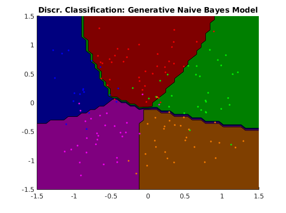
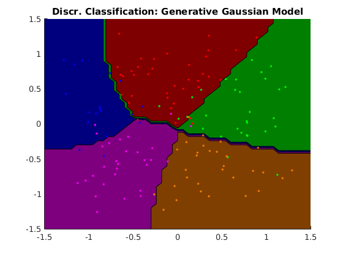
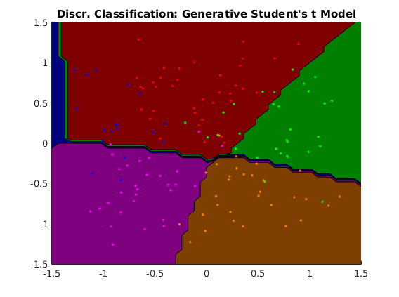
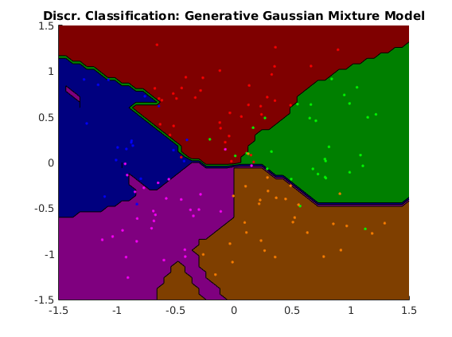
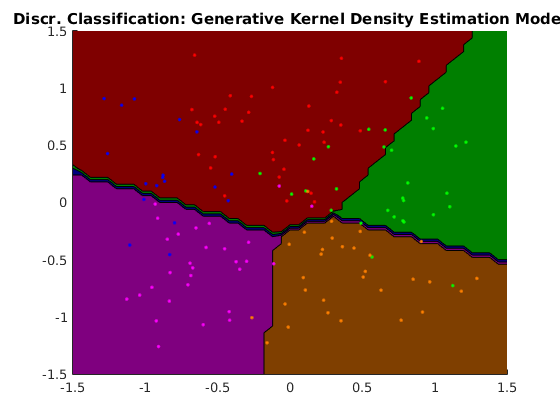
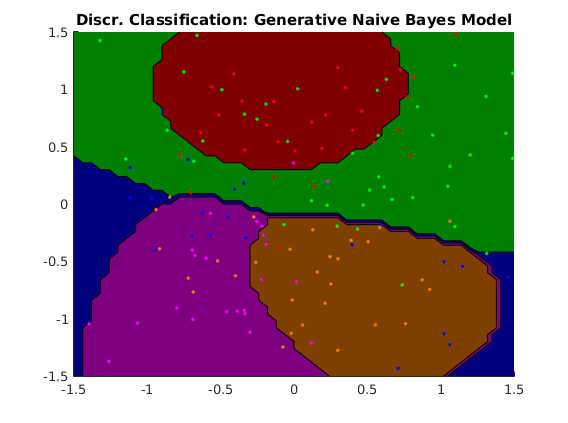
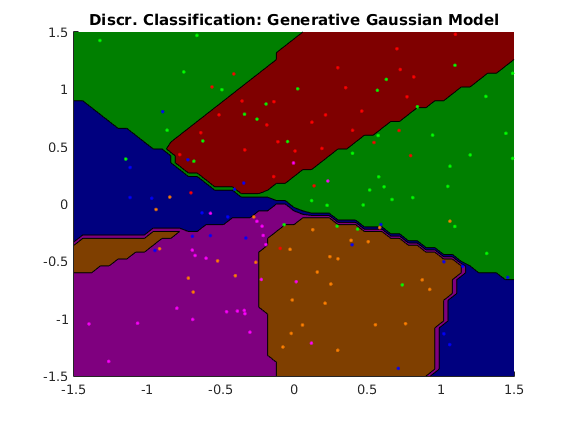
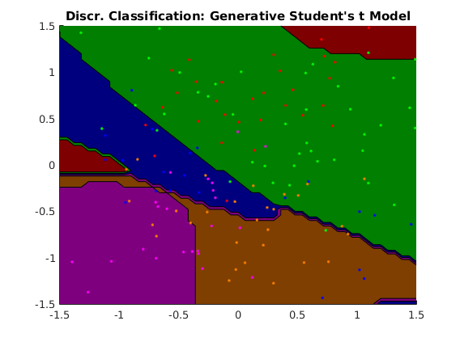
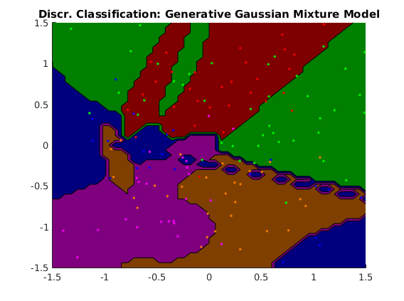
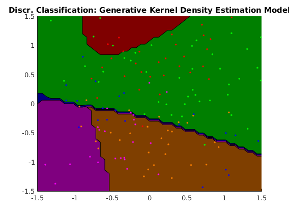

Contents
- Description of demo_multiclass_discrim.m
- usage of GDA with naive Bayes models (5grid data)
- usage of GDA with Gaussian models (5grid data)
- usage of GDA with Student-t models (5grid data)
- usage of GDA with Gaussian mixture models (5grid data)
- usage of GDA with kernel density estimation models (5grid data)
- usage of GDA with naive Bayes models (gridMulti data)
- usage of GDA with Gaussian models (gridMulti data)
- usage of GDA with Student-t models (gridMulti data)
- usage of GDA with Gaussian mixture models (gridMulti data)
- usage of GDA with kernel density estimation models (gridMulti data)
Description of demo_multiclass_discrim.m
Fits a variety of discriminative classifiers to two datasets for a multiclass classification
clear all close all generateData_5grid
usage of GDA with naive Bayes models (5grid data)
options_nb = []; options_nb.subModel = @ml_generative_NB; model_nb = ml_multiclass_GDA(Xtrain, ytrain, options_nb); yhat_nb = model_nb.predict(model_nb, Xtest); testError_nb = mean(yhat_nb ~= ytest); fprintf('Averaged misclassification test error with %s is: %.3f\n', ... model_nb.name, testError_nb); figure; plotClassifier(Xtrain, ytrain, model_nb);
Averaged misclassification test error with Discr. Classification: Generative Naive Bayes Model is: 0.089
usage of GDA with Gaussian models (5grid data)
options_gs.subModel = @ml_generative_Gaussian; model_gs = ml_multiclass_GDA(Xtrain, ytrain, options_gs); yhat_gs = model_gs.predict(model_gs, Xtest); testError_gs = mean(yhat_gs ~= ytest); fprintf('Averaged misclassification test error with %s is: %.3f\n', ... model_gs.name, testError_gs); figure; plotClassifier(Xtrain, ytrain, model_gs);
Averaged misclassification test error with Discr. Classification: Generative Gaussian Model is: 0.076
usage of GDA with Student-t models (5grid data)
options_st = []; options_st.subModel = @ml_generative_student; model_st = ml_multiclass_GDA(Xtrain, ytrain, options_st); yhat_st = model_st.predict(model_st, Xtest); testError_st = mean(yhat_st ~= ytest); fprintf('Averaged misclassification test error with %s is: %.3f\n', ... model_st.name, testError_st); figure; plotClassifier(Xtrain, ytrain, model_st);
Averaged misclassification test error with Discr. Classification: Generative Student's t Model is: 0.227
usage of GDA with Gaussian mixture models (5grid data)
options_mg = []; options_mg.subModel = @ml_generative_mixtureGaussian; options_mg.subOptions.nMixtures = 2; model_mg = ml_multiclass_GDA(Xtrain, ytrain, options_mg); yhat_mg = model_mg.predict(model_mg, Xtest); testError_mg = mean(yhat_mg ~= ytest); fprintf('Averaged misclassification test error with %s is: %.3f\n', ... model_mg.name, testError_mg); figure; plotClassifier(Xtrain, ytrain, model_mg);
Averaged misclassification test error with Discr. Classification: Generative Gaussian Mixture Model is: 0.089
usage of GDA with kernel density estimation models (5grid data)
options_kde = []; options_kde.subModel = @ml_generative_KDE; model_kde = ml_multiclass_GDA(Xtrain, ytrain, options_kde); yhat_kde = model_kde.predict(model_kde, Xtest); testError_kde = mean(yhat_kde ~= ytest); fprintf('Averaged misclassification test error with %s is: %.3f\n', ... model_kde.name, testError_kde); figure; plotClassifier(Xtrain, ytrain, model_kde);
Averaged misclassification test error with Discr. Classification: Generative Kernel Density Estimation Model is: 0.244
generateData_gridMulti
usage of GDA with naive Bayes models (gridMulti data)
options_nb = []; options_nb.subModel = @ml_generative_NB; model_nb = ml_multiclass_GDA(Xtrain, ytrain, options_nb); yhat_nb = model_nb.predict(model_nb, Xtest); testError_nb = mean(yhat_nb ~= ytest); fprintf('Averaged misclassification test error with %s is: %.3f\n', ... model_nb.name, testError_nb); figure; plotClassifier(Xtrain, ytrain, model_nb);
Averaged misclassification test error with Discr. Classification: Generative Naive Bayes Model is: 0.222
usage of GDA with Gaussian models (gridMulti data)
options_gs = []; options_gs.subModel = @ml_generative_Gaussian; model_gs = ml_multiclass_GDA(Xtrain, ytrain, options_gs); yhat_gs = model_gs.predict(model_gs, Xtest); testError_gs = mean(yhat_gs ~= ytest); fprintf('Averaged misclassification test error with %s is: %.3f\n', ... model_gs.name, testError_gs); figure; plotClassifier(Xtrain, ytrain, model_gs);
Averaged misclassification test error with Discr. Classification: Generative Gaussian Model is: 0.164
usage of GDA with Student-t models (gridMulti data)
options_st = []; options_st.subModel = @ml_generative_student; model_st = ml_multiclass_GDA(Xtrain, ytrain, options_st); yhat_st = model_st.predict(model_st, Xtest); testError_st = mean(yhat_st ~= ytest); fprintf('Averaged misclassification test error with %s is: %.3f\n', ... model_st.name, testError_st); figure; plotClassifier(Xtrain, ytrain, model_st);
Averaged misclassification test error with Discr. Classification: Generative Student's t Model is: 0.444
usage of GDA with Gaussian mixture models (gridMulti data)
options_mg = []; options_mg.subModel = @ml_generative_mixtureGaussian; options_mg.subOptions.nMixtures = 2; model_mg = ml_multiclass_GDA(Xtrain, ytrain, options_mg); yhat_mg = model_mg.predict(model_mg, Xtest); testError_mg = mean(yhat_mg ~= ytest); fprintf('Averaged misclassification test error with %s is: %.3f\n', ... model_mg.name, testError_mg); figure; plotClassifier(Xtrain, ytrain, model_mg);
Averaged misclassification test error with Discr. Classification: Generative Gaussian Mixture Model is: 0.262
usage of GDA with kernel density estimation models (gridMulti data)
options_kde = []; options_kde.subModel = @ml_generative_KDE; model_kde = ml_multiclass_GDA(Xtrain, ytrain, options_kde); yhat_kde = model_kde.predict(model_kde, Xtest); testError_kde = mean(yhat_kde ~= ytest); fprintf('Averaged misclassification test error with %s is: %.3f\n', ... model_kde.name, testError_kde); figure; plotClassifier(Xtrain, ytrain, model_kde);
Averaged misclassification test error with Discr. Classification: Generative Kernel Density Estimation Model is: 0.524